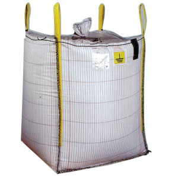

Widespread Adoption Building Type-C Bulk Bags Market
Widespread Adoption Building Type-C Bulk Bags Market
Developing the market for gas and oil fueled furnaces has propelled the type-C bulk bags market. Introduction of Type-D bags has restrained the Type-C bags market. The industrial furnace market is largest in Asia Pacific, followed by North America, indicating great market opportunity.Posted On: 2019-03-11T00:00:00
Posted By: Extensive Insights



Content Date: 2019-03-11
Download Date: 2021-07-08
Document ID: L0C04DHFT